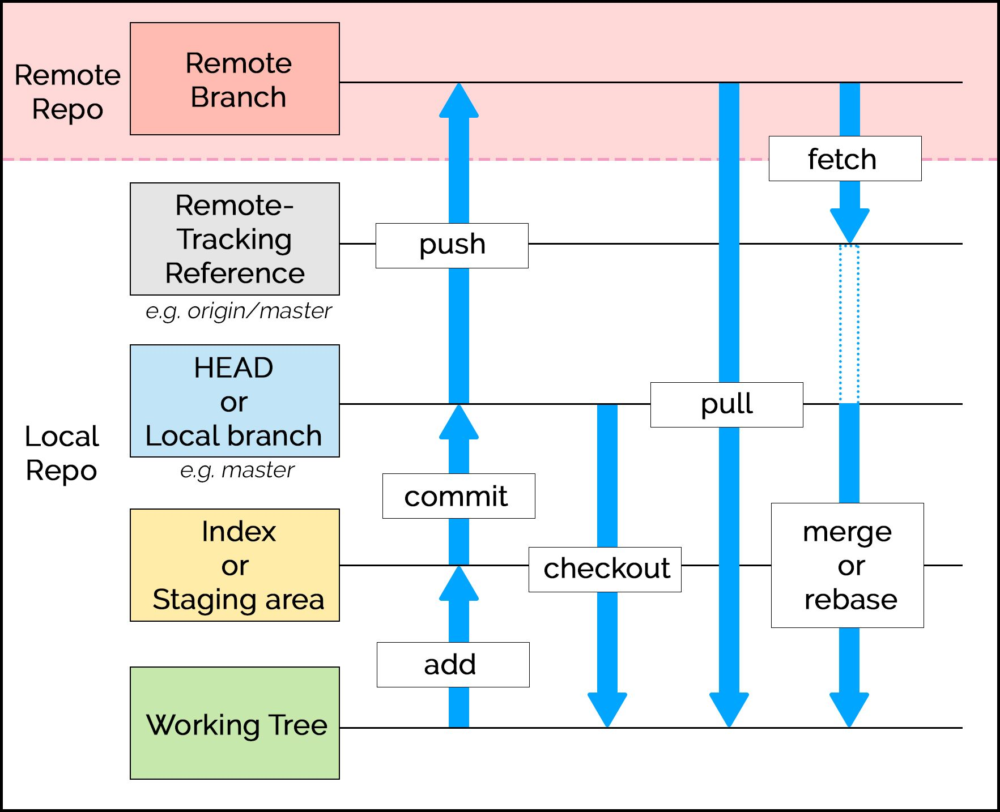

HOW TO USE GIT COMMANDS
Git is a free and open source distributed version control system designed to handle everything from small to very large projects with speed and efficiency.
Git Repository Layout

Workspace ( or working tree ) is the directory of source files that you see and edit.
Staging area ( or index ) is a single, large, binary file which lists all files in the current branch, their sha1 checksums, time stamps and the file names.
( it is not another directory with a copy of files in it )
Path: [base_of_repo]/.git/index
The local repository is a hidden directory including an 'objects' directory which contains all versions of files in the repo
( local branches and copies of remote branches )as a compressed "blob" file.
Path: [baseOfRepo]/.git
For More details
git config
To configure the author name to be used with your commits.
git config –-global user.name “[name]”
Eg:
git config –-global user.name “sachin”
To configure the email address to be used with your commits.
git config –-global user.email “[email]”
Eg:
git config --global user.email "sachin@gmail.com"
git init
To create a new empty local repository or reinitialize an existing one.
git init [repository name]
git remote
To connect your local repository to the remote server.
git remote add [variable] [url]
Eg:
git remote add origin https://github.com/SachinKodagoda/tutorials.git
To list all currently configured remote repositories.
git remote -v
git clone
To obtain a repository from an remote url (https).
git clone [https url]
Eg:
git clone https://github.com/SachinKodagoda/php_api
or
git clone https://github.com/SachinKodagoda/php_api.git
To obtain a repository from an remote url (ssh).
git clone [ssh url]
Eg:
git clone git@github.com:SachinKodagoda/php_api
or
git clone git@github.com:SachinKodagoda/php_api.git
To create a copy of a local repository.
git clone [/path/to/repository]
Eg:
git clone C:/Git/test/php_api
git add
To add a file to the staging area(index).
git add [file]
Eg:
git add style.css
To add all files to the staging area.
git add .orgit add *
git commit
To add changes to local repository.
git commit -m “[message]”
To add and commit changes to local repository.
git commit -a
git status
To list all the files that have to be committed or added.
git status
git reset
Unstages all the files, but it preserves the file contents.
git reset
Unstages a file, but it preserves the file contents.
git reset [file]
Eg:
git reset style.css
or
git reset HEAD [file]
Eg:
git reset HEAD style.css
Undo all the commits after the specified commit and preserves the changes locally.
git reset [commitID]
git rm
delete a file from your working directory and stages the deletion.
git rm [file]
git push
To send the committed changes to master branch of your remote repository.
git push [variable] master
Eg:
git push origin master
To send the branch commits to your remote repository. ( If the specific branch is not available in the remote repo, then a branch will be created )
git push [variable] [branch]
Eg:
git push origin branch_1
To push all branches to your remote repository. ( all the commits also will be added )
git push --all [variable]
Eg:
git push --all origin
To delete a branch on your remote repository.
git push [variable] :[branch]
Eg:
git push origin :branch_1
To push the current branch and set the remote as upstream branch.
git push --set-upstream [variable] [branch]
Eg:
git push --set-upstream origin branch_1
git pull
To fetch and merge changes on the remote server to your working directory.
git pull [url]
Eg:
git pull https://github.com/SachinKodagoda/tutorials.git
git branch
To list all the local branches in the current repository. and check what branch you're currently in.
git branch
To create a new branch.
git branch [branch name]
To delet a branch.
git branch -d [branch name]
git checkout
To switch from one branch to another.
git checkout [branch]
To create a new branch and switch.
git checkout -b [branch]
git merge
To merge specified branch’s history into the current branch.
git merge [branch]
git diff
Shows the file differences which are not yet staged.
git diff
Shows the file differences between in the staging area and the latest version present.
git diff --staged
Shows the file differences between the two branches.
git diff [first branch] [second branch]
git log
list the version history for the current branch.
git log
list version history for a file, including the renaming of files also.
git log --follow [file]
git show
the metadata and content changes of the specified commit.
git show [commitID]
git tag
This command is used to give tags to the specified commit.
git tag [commitID]
git stash
To stores all the modified tracked files temporarily.
git stash save
To restore the most recently stashed files.
git stash pop
To list all stashed changesets.
git stash list
discards the most recently stashed changeset.
git stash drop
git help
To check the help list.
git help
Create new repository on the command line
cd to a specific directory, then use following command lines
echo "# TEST" >> README.md
git init
git add README.md
git commit -m "first commit"
git remote add origin https://github.com/SachinKodagoda/tutorials.git
git push -u origin master
git init
git add README.md
git commit -m "first commit"
git remote add origin https://github.com/SachinKodagoda/tutorials.git
git push -u origin master
Push an existing repository on the command line
git remote add origin https://github.com/SachinKodagoda/tutorials.git
git push -u origin master
git push -u origin master